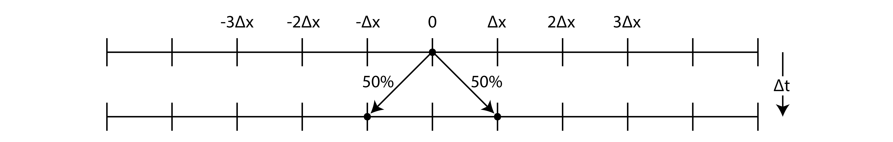
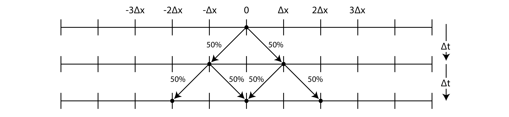
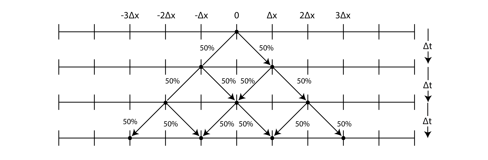
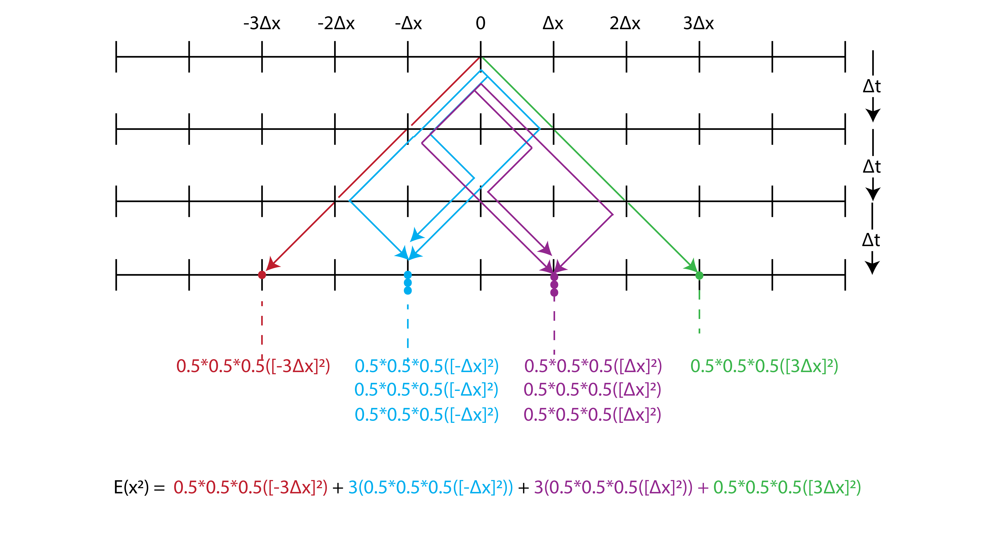

3.1. A Random Walk#
3.1.1. Mean Square Displacement#
We can derive the mean square displacement (MSD) of a diffusing particle in 1D using a random walk model, where the particle takes discrete steps either left or right with equal probability.
Let’s imagine a particle on a 1-D plane.
The particle can jump to the left or to the right. How far, on average, has the particle gone in a given time \(\Delta t\)? Or, in other words, what is its expected location E(x)? 
We see that the particle is expected, on average, to have gone 0. This is because diffusion is symmetric.
We can calculate the expected distance as: $\( E(x) = \sum (\text{Probability of distance}) \times (\text{Distance}) \)$
But we know there is a non-zero chance that the particle is not at 0. If we find the expected value of the distance squared \(x^2\), we see that the particle has traveled! At \(t = \Delta t\)
Consider what happens at the next time step \(t = 2 \Delta t\).

Consider what happens at the next time step \(t = 3 \Delta t\).

In this case we need to be very careful to account for all the ways that a particle can land at each position.

or, in general
Notice that:
Mean squared distance
We find that the expected value of the squared distance is
or, equivalently, the mean squared distance is
This relationship give a very quick and easy way to calculate how far something diffuses in a given amount of time (given the diffusion constant D).
3.1.2. The MATH HEAVY Derivation of Mean Square Displacement (MSD) Using Random Walk#
3.1.2.1. Random Walk in 1D#
At each time step, the particle moves either to the left or to the right. Let’s assume:
The particle moves a distance \( \Delta x \) at each step.
It can move to the right with probability \( p = 0.5 \), and to the left with probability \( 1 - p = 0.5 \).
Thus, the displacement \( \Delta x_i \) after each step is a random variable, where:
The total displacement after \( N \) steps is the sum of all the individual displacements:
3.1.2.2. Expected Displacement#
Because of the symmetry in the random walk (equal probability of moving left or right), the expected displacement after \( N \) steps is zero. This is based on the fact that the expected value \( \langle \Delta x_i \rangle \) for each step is zero:
Therefore, the total expected displacement after \( N \) steps is:
This makes sense intuitively, because with equal probabilities of moving left or right, the particle is equally likely to end up on either side of the origin, so the average displacement is zero.
3.1.2.3. Mean Square Displacement (MSD)#
To calculate the mean square displacement \( \langle x^2(t) \rangle \), we square the total displacement and take the average over many random walks:
3.1.2.3.1. Expanding the Squared Displacement#
We need to expand the square of the sum $ \left( \sum_{i=1}^{N} \Delta x_i \right)^2 ). Using the algebraic identity for squaring a sum:
Here we have two types of terms:
Individual terms: \( \sum_{i=1}^{N} \Delta x_i^2 \) represents the sum of the squares of the individual displacements.
Cross terms: \( 2 \sum_{i < j} \Delta x_i \Delta x_j \) represents the sum of the products of the displacements at different steps.
Let’s examine each of these terms:
3.1.2.3.2. Individual Terms#
The first term is the sum of the squares of the individual steps:
Since each step \( \Delta x_i \) can take values of \( +\Delta x \) or \( -\Delta x \), the square of each displacement \( \Delta x_i^2 \) is simply \( \Delta x^2 \), regardless of whether the step was in the positive or negative direction. Therefore, this sum becomes:
This term represents the sum of the squared displacements over all steps, and it contributes positively to the MSD.
3.1.2.3.3. Cross Terms#
The second term involves the cross-products of displacements at different steps:
Here, \( \Delta x_i \Delta x_j \) is the product of the displacements at steps \( i \) and \( j \) (where \( i \neq j \)).
Now, let’s think about the expected value of these cross terms:
Since each step is independent of the others, and each displacement \( \Delta x_i \) can be either \( +\Delta x \) or \( -\Delta x \) with equal probability, the product \( \Delta x_i \Delta x_j \) will be equally likely to be positive or negative.
When we take the average over many random walks, the positive and negative cross terms will cancel each other out.
Thus, the expected value of these cross terms is zero:
This leads to:
3.1.2.3.4. Final Expression for the MSD#
Combining the two terms, we find that the cross terms vanish, and we are left with only the sum of the squared displacements:
This is the mean square displacement after \( N \) steps.
3.1.2.4. Relating to Time and Diffusion Coefficient#
In a diffusive process, the number of steps \( N \) is proportional to the time \( t \). If each step takes a time \( \Delta t \), then:
Furthermore, the diffusion coefficient \( D \) relates the step size \( \Delta x \) and the time per step \( \Delta t \) through the relation:
Substituting these into the expression for \( \langle x^2(t) \rangle \), we get:
3.1.2.5. Conclusion#
Thus, the mean square displacement (MSD) for a diffusing particle in 1D is: